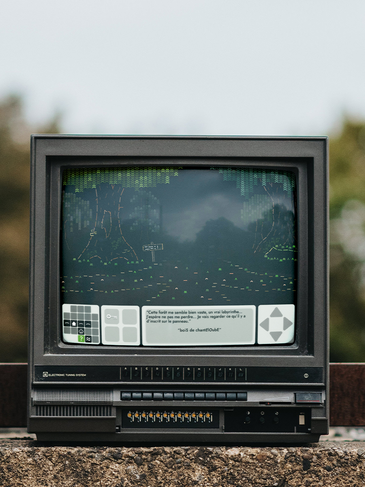
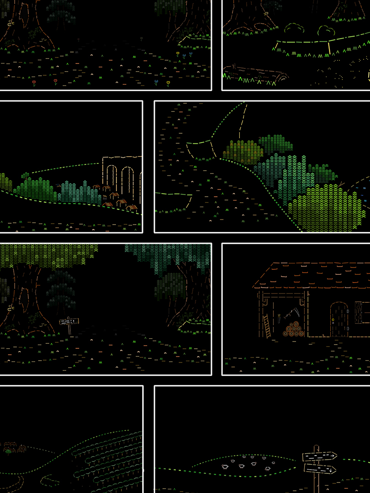

Le petit Poucet en ASCII
Dans ce projet scolaire réalisé en binôme, il est question de créer une expérience interactive en se basant sur l’histoire du conte “Le Petit Poucet”. Notre expérience se présente donc sous la forme d’un jeu d’énigmes dans le genre du “point-and-click” (pointer et cliquer), puisant nos références et volontés vers les premiers jeux d’aventures et jeux d’aventures textuels sur ordinateur. Le prototype de L’expérience propose de suivre les premiers instants de l’histoire du conte, quand le Petit Poucet part chercher des petits cailloux blancs jusqu’au moment où il trouve ces derniers.

